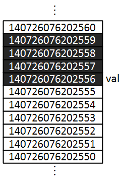
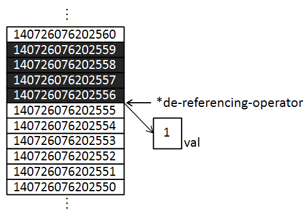

* 개인적인 공부 내용을 기록하는 용도로 작성한 글 이기에 잘못된 내용을 포함하고 있을 수 있습니다.
#1 메모리 저장 방식
#2 포인터(Pointer) 연산자 * &
#3 포인터가 필요한 이유
#4 포인터 문법
- 포인터 변수 선언
- 널 포인터
#1 메모리 저장 방식
포인터를 공부하기에 앞서 우선 프로그래머가 변수를 선언할 시 데이터가 메모리에 어떤 방식으로 저장되는지에 대해 알아 보도록 합시다.
int val = 10;"val 이라는 이름의 int 타입 변수를 선언하고 10을 할당했다." 라는 것은 컴퓨터가 어딘가의 메모리 공간에 4byte 를 할당하고 그 메모리 공간의 이름은 프로그래머가 사용하기 쉽도록 val이라는 명칭을 붙여준 것입니다.
cout << (uintptr_t)&val << endl;따라서 &연산자 (&연산자는 메모리의 주소를 가져와 주는 역할을 수행합니다. 뒤에서 자세하게 다룰 예정입니다.) 를 이용해 val 의 주소를 출력해보면 다음과 같이 val의 메모리가 할당되어 있는 메모리 주소가 출력됩니다. (단, 메모리 주소는 휘발성이기에 프로그램을 껐다 키면 바뀌어 있으며 운영체제 혹은 컴파일러 마다 출력 방식이 다릅니다.)
140726076202556
#2 포인터(Pointer) 연산자 * &
포인터 연산자를 이용하면 메모리의 주소를 가져올 수도있고, 메모리 공간에 직접 접근할 수 도 있습니다.
포인터 연산자의 종류는 &(address-of operator) 와 *(de-referencing-operator)가 있습니다.
&(address-of operator)연산자를 이용하면 메모리 공간의 주소를 가져올 수 있습니다. 다음은 int 타입 변수 x를 선언하고 x의 메모리 주소를 출력한 예제 코드입니다.
int main(int argc, char* argv[]){
int x = 1;
cout << &x << endl;
}0x7ffe3b8350cc
*(de-referencing-operator)연산자를 이용하면 메모리 공간의 값에 직접 접근할 수 있습니다.
int main(int argc, char* argv[]){
int x = 1;
cout << *(&x) << endl;
}1위 코드는 변수 x의 메모리 공간에 *연산자를 이용해 직접 접근해 메모리 공간에 저장된 값을 출력한 예제입니다.

#3 포인터가 필요한 이유
포인터라는 문법이 왜 필요한지 한 가지 상황을 예시로 이해해 보도록 하겠습니다. 다음은 두 변수를 받아 s변수에 저장한 후 반환하는 sum 이라는 함수입니다.
#include <iostream>
using namespace std;
void sum (int x, int y, int s) {
s = x + y;
}
int main(int argc, char* argv[]){
int x = 1;
int y = 2;
int s = 0;
sum(x, y, s);
cout << "sum func() - " << s << endl;
return 0;
}하지만 위의 코드를 실행시켜 보면, 기대한 바와 달리 x, y 값의 합인 3이 아닌 0이 출력됨을 확인할 수 있습니다.
0그렇다면 왜 위와 같은 상황이 발생하는 것일까요? 그 이유는 sum 함수 매개변수 s와 main 함수부의 s는 전혀 다른 변수라서 sum 함수에서 계산한 값이 서로 전혀 다른 메모리 공간에 저장되어 버린 것입니다.
정말 그런지 &연산자를 이용해 주소값을 출력해 보도록 하겠습니다.
#include <iostream>
using namespace std;
void sum (int x, int y, int s) {
s = x + y;
cout << "sum() s address - " << (uintptr_t)&s << endl;
}
int main(int argc, char* argv[]){
int x = 1;
int y = 2;
int s = 0;
cout << "main() s address - " << (uintptr_t)&s << endl;
return 0;
}main() s address - 140721819028780
sum() s address - 140721819028724
따라서 main 함수의 s값을 직접 변경하고 싶다면 포인터를 이용해 메모리의 주소 값을 직접 지정해 주어야 합니다. 아래 코드를 실행시켜보면, 실제로 main 함수의 s값이 변경되어 있음을 확인할 수 있습니다.
#include <iostream>
using namespace std;
void ptSum (int x, int y, int *s) {
*s = x + y;
}
int main(int argc, char* argv[]){
int x = 1;
int y = 2;
int s = 0;
ptSum(x, y, &s);
cout << "ptSum func() - " << s << endl;
return 0;
}ptSum func() - 3위의 상황은 포인터가 필요한 단편적인 하나의 예시일 뿐이고, 실제로 포인터는 다양한 상황에서 활용됩니다.
#4 포인터 문법
- 포인터 변수 선언
포인터란 메모리의 주소를 저장할 수 있는 "자료형" 입니다. 포인터도 int char double .. 등과 같이 하나의 타입입니다. 포인터 변수 선언시에는, 데이터 타입을 작성하고 그 뒤에 *를 붙여 주면 됩니다.
int* ptr... int type 포인터 변수
char* ptr... char type 포인터 변수
double* ptr... double type 포인터 변수
여기서 *의 위치는 어디에 붙여도 상관 없습니다. int* ptr = int *ptr = int * ptr
int val = 10;
int *ptr = &val; // int type 포인터 변수
- NULL 포인터
포인터를 사용 시 주의해야 할 점이 있습니다. 바로 포인터에 값이 담겨져 있지 않은데, de-referencing(*)을 하는 상황입니다.
int *ptr;
*ptr = 10;이는 매우 치명적인 상황을 발생시킬 수 있습니다. ptr 값이 어떤 메모리 변수를 가리키는 지 알 수 없기 때문입니다.
따라서 포인터에 주소값을 대입하지 않을 경우 null 포인터를 사용해 초기화 해야 합니다.
NULL 혹은 nullptr 키워드를 이용해 초기화할 수 있는데, NULL 은 주로 C에서 nullptr은 주로 modern C++ 에서 사용하는 키워드입니다.
int *ptr; // 위험!
int *ptr = NULL; // C Style
int *ptr = nullptr // modern C++ Style